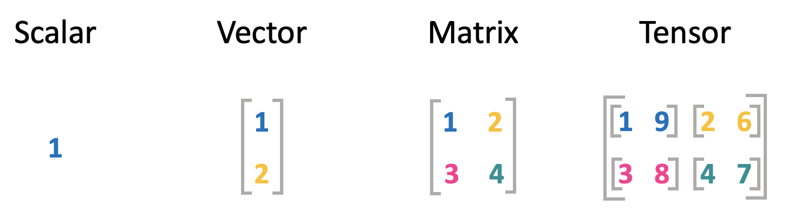
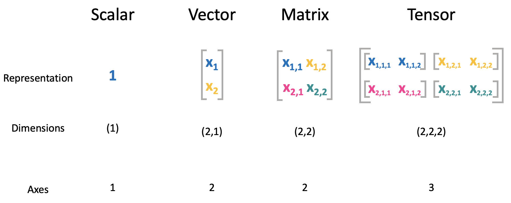
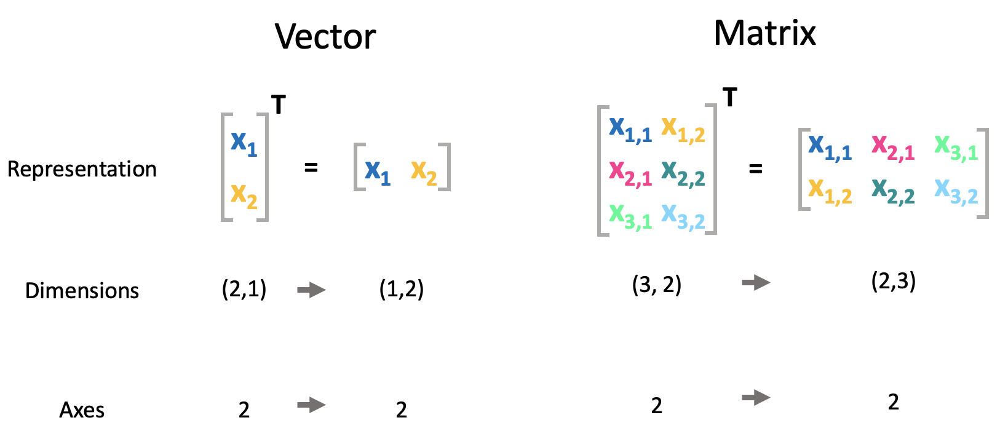
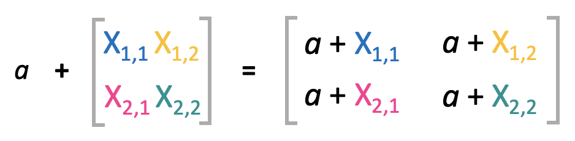
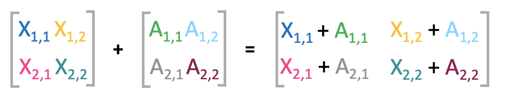
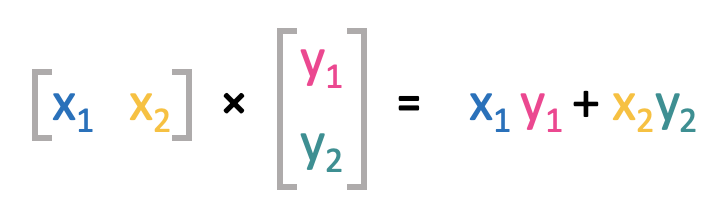
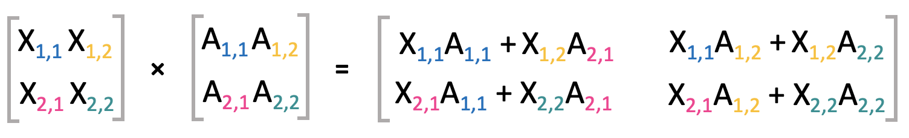

Linear Algebra
Contents
Linear Algebra¶
We will start with the boring but very important mathematical background that you will need to better understand the machine learning models.
Let’s start with the general introduction of scalars, vectors and matrices.
Elements of linear algebra¶
Scalar, Vectors, Matrices, Tensors¶
The basic objects which we will use throughout this sessions are shown below:

Scalar: A scalar is just a single number. Variables assigned to scalars are usually lowercase letters. When they are introduced, the space in which they live is usually also indicated, e.g., \(a \in \mathbb{R}\). This means that \(a\) can take any value of the real number space.
Vectors: A vector is defined as an array of numbers. In standard Python you would represent a vector as a list of values. Vectors are usually defined with bold lowercase variables, e.g., \(\mathbf{x}\). The order of elments in a vector matters and is defined. The first element of the vector \(\mathbf{x}\) is \(x_1\). As this is a scalar, we again use simple lower case variables. The dimensions and number space also has to be defined for a vector. For example \(\mathbf{x} \in \mathbb{R}^n\) would indicate that all values in \(\mathbf{x}\) are real and the vector has \(n\) elements.
You can think of a vector as identifying a point in a scace. Each element gives the coordinate along a different axis.Matrices: Matrices are 2D-arrays of numbers. We will use bold uppercase variables to define matrices, e.g., \(\mathbf{X}\). If a matrix with only real values has \(m\) rows and \(n\) colums we would define it as \(\mathbf{X} \in \mathbb{R}^{mxn}\). In the above example both, \(m\) and \(n\) are two. Single elemeents within a matrix are indexed in the order of the dimensions. The first element on the upper left would be \(A_{1,1}\), and the last element on the bottom right is \(A_{m,n}\).
Tensors: A tensor is a multidimensional object with several axes. The elements of a tensor \(\mathbf{A}\) with three axes would be denoted as \(A_{i, j, k}\).

Representation in programming¶
Numpy¶
When computing linear algebra operations in Python (which is the language we are predominantly going to use), it is common to use the Numpy-package. This package is used as a numerical base for many other frameworks and is implicitly imported when using other modules, such as pandas, tensorflow, and many other data science related libraries. Numpy includes capabilities to generate linear algebra objects and complete mathematical operations with them at a faster speed than Python would normally allow for, since Numpy operations are implemented in C.
import numpy as np
Arrays¶
An array is a data object in which scalars, vectors, matrices and tensors are stored for calculations, following a one-size-fits-all approach. To find out what kind of object is contained in an array, it is very helpful to examine its .shape-property. This gives you not only the amount of axis this object spans across, but also the amount of entries per axis. The .shape of an object plays a vital role when performing calculations with arrays, since they will indicate whether two arrays are “compatible” with each other.
In order to define arrays in Numpy, think of every level of rectangular brackets as opening up a new axis.
Note: Numpy-arrays are not to be confused with the data structure Array used in other programming languages, such as Java and Javascript, which does not serve any specific mathematical purpose.
# Define arrays
## Scalar
a_array = np.array([1])
## Vector
b_array = np.array([[1],
[2]])
## Matrix
c_array = np.array([[1,2],
[3,4]])
## Tensor
d_array = np.array([[[1,9],
[2,6]],
[[3,8],
[4,7]]])
# Check shapes of arrays
print("Shape of a_array:", a_array.shape)
print("Shape of b_array:", b_array.shape)
print("Shape of c_array:", c_array.shape)
print("Shape of d_array:", d_array.shape)
Shape of a_array: (1,)
Shape of b_array: (2, 1)
Shape of c_array: (2, 2)
Shape of d_array: (2, 2, 2)
Try it youself:
Define Numpy-arrays with the dimensions (3,); (1,3); (3,3,3) and print their shape to check for correctness.
# Array with the dimensions (3,)
a_array = ...
# Check the array's shape
# Array with the dimensions (1,3)
b_array = ...
# Check the array's shape
# Array with the dimensions (3,3)
c_array = ...
# Check the array's shape
Transpose¶
Transpose is an important operation for matrices, as it represents the mirror image of the matrix along a diagonal line called the main diagonal. The transpose of a matrix \(\mathbf{X}\) would be denoted as \(\mathbf{X}^T\) and is defined such that $\((\mathbf{X}^T)_{i,j} = X_j,i \)$
Vectors can also be thought of as matrices that only contain one column. Hence, when a (column) vector is transposed, the result is a matrix with only one row, or a (row) vector.

# Define arrays
a_array = np.array([[1],
[2]])
b_array = np.array([[1,2],
[3,4],
[5,6]])
print("Shape of vector:", a_array.shape, "Shape of matrix:", b_array.shape)
# Transpose arrays
a_transposed_array = np.transpose(a_array) # standard method
b_transposed_array = b_array.T # shorthand method
print("Shape of vector:", a_transposed_array.shape, "Shape of matrix:", b_transposed_array.shape)
Shape of vector: (2, 1) Shape of matrix: (3, 2)
Shape of vector: (1, 2) Shape of matrix: (2, 3)
Reshape¶
Numpy allows you to rearrange the elements of an array to a different (congruent) shape, while retaining the order of the elements and length of the array. This can be a useful tool when you have data stored in an array which does not yet have the shape required to pass through a certain operation or algorithm.
# Define arrays
a_array = np.array([1,2,3,4,5,6,7,8])
print("Shape of vector:", a_array.shape)
# Reshape array
a_reshaped_array = a_array.reshape((2,4))
print("Shape of reshaped vector:", a_reshaped_array.shape)
# Reshape array again
a_reshaped2_array = a_reshaped_array.reshape((2,2,2))
print("Shape of reshaped vector:", a_reshaped2_array.shape)
# Reshape back to original shape and check the elements' order
a_orig_array = a_reshaped2_array.reshape((8,))
print("Shape of reshaped vector:", a_orig_array.shape)
print(a_orig_array)
Shape of vector: (8,)
Shape of reshaped vector: (2, 4)
Shape of reshaped vector: (2, 2, 2)
Shape of reshaped vector: (8,)
[1 2 3 4 5 6 7 8]
Try it yourself:
Define a Numpy-vector of length 12 and shape (12,) (e.g. using the np.arange-function -> np.arange(0,12,1)). Then create a new vector with two axes by reshaping the original vector. Afterwards, create a third vector with three axes by reshaping the previous vector. Finally, transform the past array back to the original shape and print it to check for the correct order of elements.
# Define an array of length 12 and shape (12,)
a_array = ...
# Check the array's shape
# Rearange the original array to an array with two axes
b_array = ...
# Check the array's shape
# Rearange the previous array to an array with three axes
c_array = ...
# Check the array's shape
# Rearange the last array to an array with the original shape
d_array = ...
# Check the array's shape
# Print the array itself to check for the elements' order
Mathematical operations with matrices¶
Addition¶
A scalar can be easily added to a matrix, just by adding the scalar to each element of the matrix: \(a + X = C\), where \(C_{i, j} = a + X_{i, j}\).

Matrices can be easily added, as long as they have the same shape. Therefore, their corresponding elements are added: \(\mathbf{X} + \mathbf{A} = \mathbf{C}\), where \(C_{i, j} = X_{i, j} + A_{i, j}\).

In deep learning it is also possible to add a vector to a matrix. In this case the vector is simply repeated so that it can be added to each row of the matrix: \(\mathbf{C} = \mathbf{X} + \mathbf{a}\), where \(C_{i, j} = X_{i, j} + b_j\). This concept is called broadcasting.
Note: the subtraction of matrices is analogous to their addition.
# Addition of an scalar to an matrix
a_array = np.array([2])
b_array = np.array([[1,2],
[3,4]])
c_array = a_array + b_array
print("Result 1:\n", c_array)
# Addition of matrices
d_array = np.array([[5,6],
[7,8]])
e_array = a_array + d_array
print("Result 2:\n", e_array)
Result 1:
[[3 4]
[5 6]]
Result 2:
[[ 7 8]
[ 9 10]]
Multiplication¶
Dot Product¶
Two vectors can be multiplied using the so called dot product between those two. This is a bit more advanced than the addition, as not each element of the vectors are multiplied with each other. It is denoted as:
Hence, the vectors are multiplied element-wise and in the end all results are summed. This also implies that the dot product can only be calculated if the vectors have the same length.

Vector multiplications are distributive:
And they are commutative:
But the dot product is not assocciative, as \((x^Ty)z\) is the dot product between a scalar and a vector, which is not defined.
# Dot product of two matrices
a_array = np.array([[1],
[2]])
b_array = np.array([[3],
[4]])
# Print the arrays' shapes
print("Shape of a_array:", a_array.shape, "; Shape of b_array:", b_array.shape,)
# Calculate dot product by transposing
c_array = np.dot(a_array.T, b_array)
# Print the arrays' shapes within the operation
print("Shape of a_array:", a_array.T.shape, "; Shape of b_array:", b_array.shape,)
# Print out the resulting array and its shape
print("Shape of resulting array:", c_array.shape)
c_array
Shape of a_array: (2, 1) ; Shape of b_array: (2, 1)
Shape of a_array: (1, 2) ; Shape of b_array: (2, 1)
Shape of resulting array: (1, 1)
array([[11]])
Try it yourself:
If the arrays are commutative in the dot product operation, does it also not matter if the latter array is transposed instead of the former? Does the operation go through? What shape does the result have? Does it differ from the result obtained in the operation above?
# Dot product of two matrices
a_array = np.array([[1],
[2]])
b_array = np.array([[3],
[4]])
# Print the arrays' shapes
print("Shape of a_array:", a_array.shape, "; Shape of b_array:", b_array.shape,)
# Calculate dot product by transposing
c_array = ...
# Print the arrays' shapes within the operation
# Print out the resulting array and its shape
Shape of a_array: (2, 1) ; Shape of b_array: (2, 1)
Matrix Multiplication¶
The matrix mulitplication is an operation that is performed regularly in machine or deep learning. The matrix product of two matrices (\(\mathbf{X}\) and \(\mathbf{A}\)) is again a matrix (\(\mathbf{C}\)).
A matrix multiplication is only allowed if the shapes of the matrices to be multiplied matches. In this case, the matrix \(\mathbf{X}\) needs to have the same amount of columns as the number of rows in matrix \(\mathbf{A}\). If \(\mathbf{X}\) has the shape \(n x m\) and \(\mathbf{A}\) is of shape \(m x p\), then the dimensions of the resulting matrix \(\mathbf{C}\) are \(n x p\).
For each element in \(\mathbf{C}\), the matrix product can be written as:
Visually this can be represented as follows

Matrix multiplications are distributive:
They are also assocciative:
However, it is not commutative:
Note, that some special cases are commutative, however not generally.
The transpose of a matrix product can be represented as: $\( (\mathbf{A}\mathbf{B})^T = \mathbf{B}^T\mathbf{A}^T\)$
# Matrix multiplication
a_array = np.array([[1,2],
[3,4],
[5,6]])
b_array = np.array([[5,6,7],
[7,8,9]])
# Check the shapes for alignment
print("Shapes check:", a_array.shape, ";", b_array.shape)
# Calcualte matrix multiplication
c_array = np.matmul(a_array, b_array)
# Output the resulting array and its shape
print("Resulting shape:", c_array.shape)
c_array
Shapes check: (3, 2) ; (2, 3)
Resulting shape: (3, 3)
array([[19, 22, 25],
[43, 50, 57],
[67, 78, 89]])
Try it yourself:
Below find a series of arrays pairs, which are to be matrix multiplied. Check their shapes and reshape them if neccesary to make them compatible with the matrix multiplication operation. Try to predict the resulting shape.
## a)
# Create two arrays
a_array = np.array([[1,2,3,4,5,6],
[7,8,9,10,11,12]])
b_array = np.array([[1,2],
[3,4],
[5,6]])
# Check shapes for compatibility
# Reshape if neccesary
# Compute the matrix multiplication operation
c_array = ...
# Output the resulting shape
## b)
# Create two arrays
a_array = np.array([[1,2,3,4],
[5,6,7,8],
[9,10,11,12],
[13,14,15,16]])
b_array = np.array([[1],
[2],
[3],
[4],
[5],
[6],
[7],
[8]])
# Check shapes for compatibility
# Reshape if neccesary
# Compute the matrix multiplication operation
c_array = ...
# Output the resulting shape
## c)
# Create two arrays
a_array = np.array([[[1,2],
[3,4]],
[[5,6],
[7,8]],
[[9,10],
[11,12]]])
b_array = np.array([[1,2],
[3,4]])
# Check shapes for compatibility
# Reshape if neccesary
# Compute the matrix multiplication operation
c_array = ...
# Output the resulting shape
Linear equations¶
Now that we know how to do matrix multiplication, we can use this to write down a simple linear equatiton. Assume we have \(N\) observations of variable x that has \(m\) features. Take as an example different features of appartments such as flat size, year it was built, and so on. We can store this information in a matrix \(X\) that has the dimensions (\(N\), \(m\)) i.e., \(X \in \mathbb{R}^{Nxm}\). If we now want to determine the prize for a given flat, we could use different scaling factors for each feature. Hence in an additional vector \(w\) we store how much each feature affects the prize. To now calculate the prize \(p\) we can write: $\( \mathbf{Xw} = \mathbf{p} \)$
More explicitly this would mean:
We can also rewrite this as:
where \(\mathbf{X_{:,i}}\) denotes that we perform this operation across all rows while varying the column with index \(i\). This is also called a \(linear combination\).
This representation is especially important for deep learning including any form of linear regression.
Linear dependence¶
A vector is linearly dependent on a set of vectors, if the vector can be represented with a linear combination of this set of vectors. On the other hand, a set of vectors are linearly independent if no vector is a linear combination of any other vectors.
Matrix Inversion¶
It is not possible to directly divide by a matrix. However, we can utilize the concept of matrix inversion to be able to solve a linear system of equations as the one above for \(w\).
Identity matrix¶
For matrix inversioon we first need to define the concept of the identity matrix. The identitty matrix is denoted as \(\mathbf{I_n} \in \mathbb{R}^{nxn}\). This special matrix contains only ones on its diagonal. All other entries are zero.

Multiplying any vector with this matrix does not change the vector. $\(\forall x \in \mathbb{R} ^n, \mathbf{I_n x} = \mathbf{x}\)$
Matrix inverse¶
Now we can define the matrix inverse of a given matrix \(X\) as \(X^{-1}\) such that
However, for \(\mathbf{X^{-1}}\) to exist \(\mathbf{X}\) has to be a square matrix (number of rows = number of columns), all columns must be linearly independent, hence the determinant, to which we will come later, has to be non-zero.
Defining the matrix inverse now also allows us to solve the above defined linear system of equations for \(w\).
Note, that calculating the inverse can often times be computatioonally inefficient and contain limited precision on a computer. Hence this representation is usually only for theoretical applications.
# Define array
a_array = np.array([[1,2],
[3,4]])
# Calculate matrix inverse
a_inverse_array = np.linalg.inv(a_array)
a_inverse_array
array([[-2. , 1. ],
[ 1.5, -0.5]])
Norms¶
We can measure the size (or length) of a vector with the help of the norm. It measures the distance from the origin to the point defined by the vector.
Generally the \(L^p\) norm is defined as
# Define array
a_array = np.array([[1],
[4]])
# Calculate matrix inverse
a_normed_array = np.linalg.norm(a_array)
a_normed_array
4.123105625617661